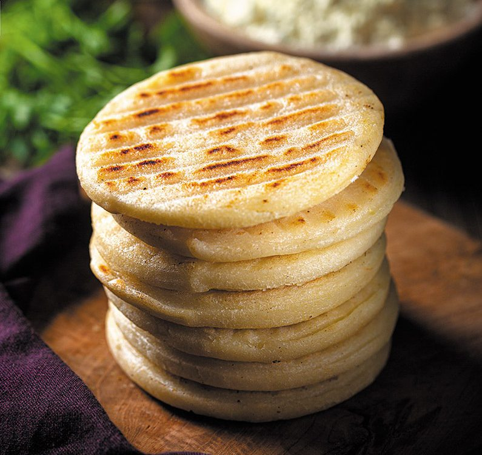

Receita de Arepa

Ingredientes:
- Farinha de milho pré-cozida
- Água
- Sal a gosto
Instruções:
- Misture a farinha de milho com água e sal em uma tigela até obter uma massa homogênea.
- Forme pequenas bolas de massa e achate-as para dar forma à arepa.
- Cozinhe as arepas em uma frigideira quente até que fiquem douradas dos dois lados.
Aproveite suas deliciosas arepas!